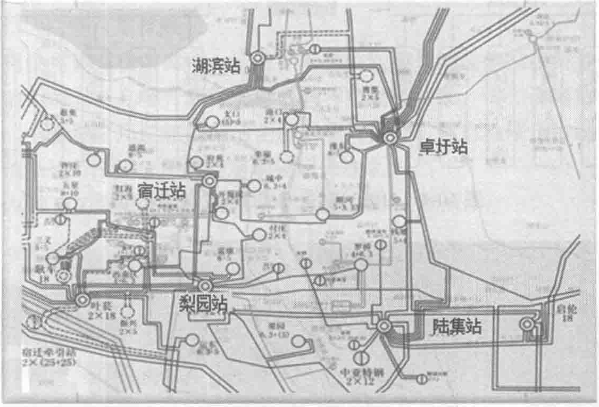

10.2 京东集团华东数据中心主要基础设施系统
10.2.1 供配电系统
1. 京东110kV专用变电站
全力保证负荷用电的高可靠性是本项目在规划时的重点目标之一。建立京东专属的110kV变电站是达成这一目标的绝佳途径。110kV变电站紧邻本项目园区，其上一级来自两个不同的220kV变电站专线。在110kV变电站内设2台63MV·A用户主变变压器，容量满足整个数据中心园区最大用电量。当两台用户变压器任意一台检修或发生故障时，另一台完全满足园区内所有设备的正常用电需求。供电区域网络如图10-3所示。

110kV专用变电站主接线采用分段单母线，正常运行时，两路110kV电源分别向两段母线供电，母联断路器此时为断开状态。当一路110kV电源停电或检修时，母联断路器投入运行，由第二路电源向两段母线供电，每路电源均可带起全部负荷。
在110kV变电站内经110kV/10kV变压器输出，在变电所内按A、B双路10kV分别送至园区各个模块楼及办公楼。站内10kV母线段以放射式向各模块供电。两段母线分别向各个模块提供A/B路电源，当一段母线故障或停电时，另一段母线经母联断路器投入带载两段母线全部负荷，供电示意如图10-4所示，实物图如图10-5所示。
2. 后备柴油发电系统
（1）系统的特点
- 当只有一路市电停电或检修时，并机系统按4+1的模式运行，例如：当市电A停电时，并机系统A组4台发电机组启动运行，当其中一台机组故障时，则自动启动B系统优先级别最高的一台发电机组投入并机运行。